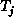

Data Structures and Algorithms
with Object-Oriented Design Patterns in Java
Data Structures and Algorithms
with Object-Oriented Design Patterns in JavaThe definition for complete binary trees can be easily extended to trees with arbitrary fixed degree as follows:
Definition (Complete N-ary Tree) A complete N-ary tree of height, is an N-ary tree with the following properties.
- If h=0, for all i, .
- For h>0 there exists a j, such that
is a perfect binary tree of height h-1 for all ;
-  is a complete binary tree of height h-1; and,
Note that while it is expressed in somewhat different terms,
the definition of a complete N-ary tree is consistent
with the definition of a binary tree for N=2.
Figure  shows an example of a complete ternary (N=3) tree.
shows an example of a complete ternary (N=3) tree.
Figure: A complete ternary tree.
Informally, a complete tree is a tree in which all the levels
are full except for the bottom level
and the bottom level is filled from left to right.
For example in Figure ,
the first three levels are full.
The fourth level which comprises nodes 14-21
is partially full and has been filled from left to right.
The main advantage of using complete binary trees is that
they can be easily stored in an array.
Specifically, consider the nodes of a complete tree
numbered consecutively in level-order as they are
in Figures and .
There is a simple formula that relates the number of a node
with the number of its parent
and the numbers of its children.
Consider the case of a complete binary tree.
The root node is node 1 and its children are nodes 2 and 3.
In general, the children of node i are 2i and 2i+1.
Conversely, the parent of node i is  .
Figure illustrates this idea by showing how
the complete binary tree shown in Figure
is mapped into an array.
.
Figure illustrates this idea by showing how
the complete binary tree shown in Figure
is mapped into an array.
Figure: Array representation of a complete binary tree.
A remarkable characteristic of complete trees is that filling the bottom level from left to right corresponds to adding elements at the end of the array! Thus, a complete tree containing n nodes occupies the first n consecutive array positions.
The array subscript calculations given above can be easily generalized to complete N-ary trees. Assuming that the root occupies position 1 of the array, its N children occupy positions 2, 3, ..., N+1. In general, the children of node i occupy positions
and the parent of node i is found at
 Copyright © 1998 by Bruno R. Preiss, P.Eng. All rights reserved.
Copyright © 1998 by Bruno R. Preiss, P.Eng. All rights reserved.